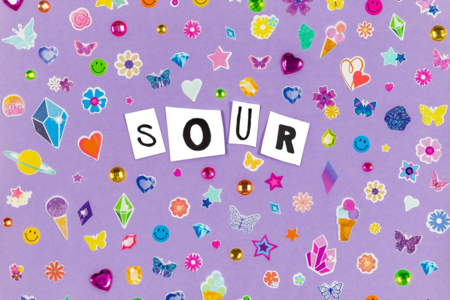
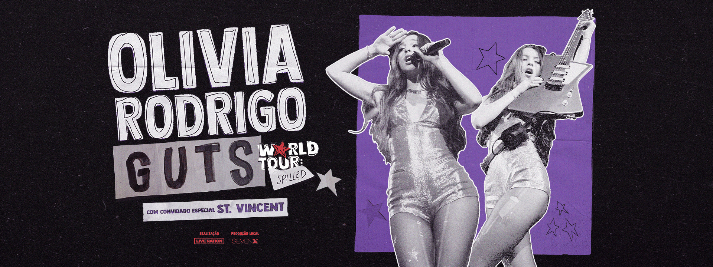

Trabalhos como cantora
Essas são alguns dos meus álbuns de músicas que compus e canto:

Trabalhos como atriz
Esses são alguns dos meus trabalhos como atriz em series e filmes.

Minhas turnes
Essas as minhas turnes uma e fiz com o álbum Sour e a outra com o álbum Guts.